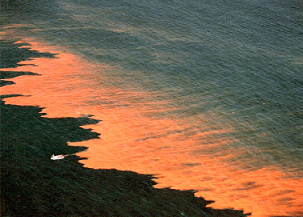

Sobre a Maré Vermelha
As marés vermelhas ocorrem quando há uma proliferação maciça de algas, frequentemente causada por um conjunto de fatores ambientais que favorecem seu crescimento:
Nutrientes em Excesso: A presença de altos níveis de nutrientes como nitrogênio e fósforo na água, muitas vezes resultantes do escoamento agrícola, esgoto doméstico e industrial, serve como fertilizante para as algas.
Temperatura da Água: Temperaturas elevadas podem acelerar o crescimento das algas, sendo mais comuns em períodos de calor intenso.
Luz Solar: A luz solar intensa facilita a fotossíntese das algas, contribuindo para seu rápido crescimento.
Estagnação da Água: Águas calmas e pouco movimentadas permitem que as algas se concentrem em uma área específica.
Medidas de Prevenção
Monitoramento Regular: Autoridades ambientais devem realizar monitoramento contínuo da qualidade da água, especialmente em áreas costeiras suscetíveis a marés vermelhas.
Sinalização e Comunicação: Comunicar prontamente à população sobre a ocorrência de marés vermelhas através de sinais e avisos em praias e áreas de pesca.
Controle de Poluição: Reduzir a entrada de nutrientes na água através do controle de escoamentos agrícolas, tratamento adequado de esgoto e regulamentação de despejos industriais.
Educação Pública: Informar a comunidade sobre os riscos das marés vermelhas e como identificar os primeiros sinais, como mudanças na cor da água e mortandade de peixes.
As marés vermelhas podem ter efeitos devastadores tanto para o meio ambiente quanto para a saúde pública:
Vida Marinha: As toxinas liberadas pelas algas podem causar a morte massiva de peixes, moluscos e outros organismos marinhos, perturbando ecossistemas inteiros.
Saúde Humana: O consumo de frutos do mar contaminados com as toxinas das marés vermelhas pode levar à intoxicação alimentar, causando sintomas como vômito, diarreia, irritação na pele, dificuldade respiratória e secura nos olhos. Em casos graves, pode haver risco de morte.
As marés vermelhas representam um fenômeno ambiental significativo que exige atenção e ação coordenada entre autoridades, cientistas e a comunidade. O monitoramento rigoroso, a educação pública e a implementação de medidas preventivas são fundamentais para mitigar os impactos na saúde e no meio ambiente.